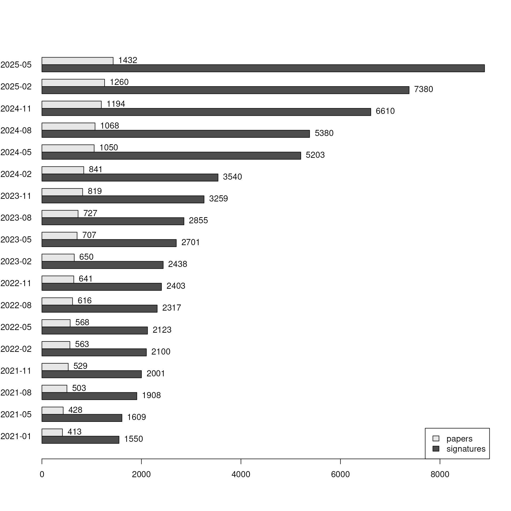

Reading data
Get bulk export from bugsigdb.org:
full.dat <- bugsigdbr::importBugSigDB()## Using cached version from 2021-11-24 21:40:14
dim(full.dat)## [1] 2069 48
colnames(full.dat)## [1] "Study" "Study design"
## [3] "PMID" "DOI"
## [5] "URL" "Authors"
## [7] "Title" "Journal"
## [9] "Year" "Experiment"
## [11] "Location of subjects" "Host species"
## [13] "Body site" "UBERON ID"
## [15] "Condition" "EFO ID"
## [17] "Group 0 name" "Group 1 name"
## [19] "Group 1 definition" "Group 0 sample size"
## [21] "Group 1 sample size" "Antibiotics exclusion"
## [23] "Sequencing type" "16S variable region"
## [25] "Sequencing platform" "Statistical test"
## [27] "Significance threshold" "MHT correction"
## [29] "LDA Score above" "Matched on"
## [31] "Confounders controlled for" "Pielou"
## [33] "Shannon" "Chao1"
## [35] "Simpson" "Inverse Simpson"
## [37] "Richness" "Signature page name"
## [39] "Source" "Curated date"
## [41] "Curator" "Revision editor"
## [43] "Description" "Abundance in Group 1"
## [45] "MetaPhlAn taxon names" "NCBI Taxonomy IDs"
## [47] "State" "Reviewer"Stripping illformed entries:
Curation output
Number of papers and signatures curated:
## [1] 509
nrow(full.dat)## [1] 2069Publication date of the curated papers:
pmids <- pmids[!is.na(pmids)]
pubyear1 <- pmid2pubyear(pmids[1:361])
pubyear2 <- pmid2pubyear(pmids[362:length(pmids)])
pubyear <- c(pubyear1, pubyear2)
head(cbind(pmids, pubyear))## pmids pubyear
## [1,] "28038683" "2016"
## [2,] "28173873" "2017"
## [3,] "27015276" "2016"
## [4,] "27625705" "2016"
## [5,] "23071781" "2012"
## [6,] "28467925" "2017"
tab <- table(pubyear)
tab <- tab[-length(tab)]
tab <- tab[order(as.integer(names(tab)))]
df <- data.frame(year = names(tab), papers = as.integer(tab))
ggbarplot(df, x = "year", y = "papers",
label = TRUE, fill = "steelblue",
ggtheme = theme_bw())
Stripping empty signatures:
ind1 <- lengths(full.dat[["MetaPhlAn taxon names"]]) > 0
ind2 <- lengths(full.dat[["NCBI Taxonomy IDs"]]) > 0
dat <- full.dat[ind1 & ind2,]
nrow(dat)## [1] 2069Papers containing only empty UP and DOWN signatures (under curation?):
## numeric(0)Progress over time:
dat[,"Curated date"] <- as.character(lubridate::dmy(dat[,"Curated date"]))
plotProgressOverTime(dat)
plotProgressOverTime(dat, diff = TRUE)
Stratified by curator:
npc <- stratifyByCurator(dat)
plotCuratorStats(dat, npc)
Number of complete and revised signatures:
table(df[["State"]])## < table of extent 0 >
table(dat[,"Revision editor"])##
## Chloe
## 1
## Chloe,Claregrieve1
## 1
## Chloe,Claregrieve1,WikiWorks743
## 1
## Claregrieve1
## 126
## Claregrieve1,Fatima
## 5
## Claregrieve1,Lwaldron
## 1
## Cynthia Anderson
## 20
## Cynthia Anderson,LGeistlinger,WikiWorks743
## 2
## Cynthia Anderson,Lwaldron,WikiWorks743
## 1
## Fatima
## 4
## Fatima,Fcuevas3
## 1
## Fatima,Kwekuamoo,WikiWorks743
## 2
## Fatima,LGeistlinger,Rimsha,WikiWorks743
## 1
## Fatima,Lwaldron,WikiWorks743
## 4
## Fatima,Madhubani Dey
## 2
## Fatima,Rimsha,WikiWorks743
## 1
## Fatima,Tislam
## 6
## Fatima,Titas
## 1
## Fatima,WikiWorks743
## 50
## Fatima,Yu Wang
## 6
## Fcuevas3
## 22
## Gina
## 14
## Itslanapark
## 21
## Joyessa
## 1
## Kwekuamoo
## 37
## Kwekuamoo,WikiWorks743
## 1
## Lorakasselman
## 2
## Lwaldron
## 7
## Lwaldron,Madhubani Dey
## 1
## Lwaldron,Titas
## 1
## Lwaldron,WikiWorks743
## 34
## Madhubani Dey
## 44
## Manuela
## 11
## Mmarin
## 13
## Samara.Khan
## 47
## Tislam
## 12
## Titas
## 11
## Valentina
## 2
## WikiWorks,WikiWorks743,WikiWorks753
## 1
## WikiWorks743
## 1550
## WikiWorks743,WikiWorks753
## 1Study stats
Study design
spl <- split(dat[["Study"]], dat[["Study design"]])
sds <- lapply(spl, unique)
sort(lengths(sds), decreasing = FALSE)## case-control,prospective cohort
## 1
## case-control,meta-analysis
## 2
## meta-analysis
## 3
## randomized controlled trial
## 22
## laboratory experiment
## 25
## time series / longitudinal observational
## 50
## prospective cohort
## 51
## cross-sectional observational, not case-control
## 126
## case-control
## 244Experiment stats
Columns of the full dataset that describe experiments:
# Experiment ID
exp.cols <- c("Study", "Experiment")
# Subjects
sub.cols <- c("Host species",
"Location of subjects",
"Body site",
"Condition",
"Antibiotics exclusion",
"Group 0 sample size",
"Group 1 sample size")
# Lab analysis
lab.cols <- c("Sequencing type",
"16S variable region",
"Sequencing platform")
# Statistical analysis
stat.cols <- c("Statistical test",
"MHT correction",
"Significance threshold")
# Alpha diversity
div.cols <- c("Pielou",
"Shannon",
"Chao1",
"Simpson",
"Inverse Simpson",
"Richness")Restrict dataset to experiment information:
Subjects
Number of experiments for the top 10 categories for each subjects column:
## $`Host species`
##
## Homo sapiens Mus musculus Rattus norvegicus
## 1141 40 10
##
## $`Location of subjects`
##
## China United States of America Italy
## 345 332 49
## Spain South Korea Finland
## 48 41 34
## Canada Japan Brazil
## 27 25 23
## Netherlands
## 20
##
## $`Body site`
##
## feces saliva
## 680 40
## uterine cervix,obsolete_cervix vagina
## 40 33
## obsolete_mouth structure,oral opening oral gland
## 29 28
## meconium skin of body
## 25 24
## stomach nasopharynx
## 23 21
##
## $Condition
##
## obesity
## 103
## COVID-19
## 73
## diet
## 55
## antimicrobial agent
## 51
## human papilloma virus infection
## 42
## gastric cancer,gastric carcinoma,stomach neoplasm
## 35
## asthma
## 32
## air pollution
## 30
## cesarean section
## 30
## endometriosis
## 30
##
## $`Antibiotics exclusion`
##
## 3 months 1 month 6 months
## 155 99 63
## 2 months 4 weeks 2 weeks
## 52 38 29
## 8 weeks before sample collection 30 days
## 11 10 9
## 14 days
## 8Proportions instead:
sub.tab <- lapply(sub.cols[1:5], tabCol, df = exps, n = 10, perc = TRUE)
names(sub.tab) <- sub.cols[1:5]
sub.tab## $`Host species`
##
## Homo sapiens Mus musculus Rattus norvegicus
## 0.9580 0.0336 0.0084
##
## $`Location of subjects`
##
## China United States of America Italy
## 0.2910 0.2800 0.0413
## Spain South Korea Finland
## 0.0404 0.0345 0.0286
## Canada Japan Brazil
## 0.0227 0.0211 0.0194
## Netherlands
## 0.0168
##
## $`Body site`
##
## feces saliva
## 0.5700 0.0335
## uterine cervix,obsolete_cervix vagina
## 0.0335 0.0277
## obsolete_mouth structure,oral opening oral gland
## 0.0243 0.0235
## meconium skin of body
## 0.0210 0.0201
## stomach nasopharynx
## 0.0193 0.0176
##
## $Condition
##
## obesity
## 0.0865
## COVID-19
## 0.0613
## diet
## 0.0462
## antimicrobial agent
## 0.0428
## human papilloma virus infection
## 0.0353
## gastric cancer,gastric carcinoma,stomach neoplasm
## 0.0294
## asthma
## 0.0269
## air pollution
## 0.0252
## cesarean section
## 0.0252
## endometriosis
## 0.0252
##
## $`Antibiotics exclusion`
##
## 3 months 1 month 6 months
## 0.2160 0.1380 0.0877
## 2 months 4 weeks 2 weeks
## 0.0724 0.0529 0.0404
## 8 weeks before sample collection 30 days
## 0.0153 0.0139 0.0125
## 14 days
## 0.0111Sample size:
ssize <- apply(exps[,sub.cols[6:7]], 2, summary)
ssize## Group 0 sample size Group 1 sample size
## Min. 1.00000 1.00000
## 1st Qu. 13.00000 12.00000
## Median 24.00000 24.00000
## Mean 49.52567 63.22308
## 3rd Qu. 48.00000 41.00000
## Max. 969.00000 3122.00000
## NA's 44.00000 32.00000Lab analysis
Number of experiments for the top 10 categories for each lab analysis column:
## $`Sequencing type`
##
## 16S WMS
## 1093 86
##
## $`16S variable region`
##
## 34 4 123 12 45 345 3 23
## 352 295 90 63 44 36 30 11
## 56 23456789
## 11 10
##
## $`Sequencing platform`
##
## Illumina Roche454
## 789 179
## Ion Torrent RT-qPCR
## 87 77
## Human Intestinal Tract Chip MGISEQ-2000
## 12 9
## Mass spectrometry HTF-Microbi.Array
## 5 4
## Illumina,Roche454 Non-quantitative PCR
## 3 3Proportions instead:
lab.tab <- lapply(lab.cols, tabCol, df = exps, n = 10, perc = TRUE)
names(lab.tab) <- lab.cols
lab.tab## $`Sequencing type`
##
## 16S WMS
## 0.9270 0.0729
##
## $`16S variable region`
##
## 34 4 123 12 45 345 3 23
## 0.3610 0.3030 0.0924 0.0647 0.0452 0.0370 0.0308 0.0113
## 56 23456789
## 0.0113 0.0103
##
## $`Sequencing platform`
##
## Illumina Roche454
## 0.66900 0.15200
## Ion Torrent RT-qPCR
## 0.07380 0.06530
## Human Intestinal Tract Chip MGISEQ-2000
## 0.01020 0.00763
## Mass spectrometry HTF-Microbi.Array
## 0.00424 0.00339
## Illumina,Roche454 Non-quantitative PCR
## 0.00254 0.00254Statistical analysis
Number of experiments for the top 10 categories for each statistical analysis column:
## $`Statistical test`
##
## Mann-Whitney (Wilcoxon) LEfSe Kruskall-Wallis
## 336 326 91
## DESeq2 T-Test ANOVA
## 85 73 59
## Linear Regression Metastats Logistic Regression
## 28 20 19
## Welch's T-Test
## 14
##
## $`MHT correction`
##
## FALSE TRUE
## 602 564
##
## $`Significance threshold`
##
## 0.05 0.1 0.01 0.001 0.2 0.15 0 0.25 0.002 0.004
## 1033 66 25 12 12 4 3 3 2 2Proportions instead:
stat.tab <- lapply(stat.cols, tabCol, df = exps, n = 10, perc = TRUE)
names(stat.tab) <- stat.cols
stat.tab## $`Statistical test`
##
## Mann-Whitney (Wilcoxon) LEfSe Kruskall-Wallis
## 0.2950 0.2860 0.0798
## DESeq2 T-Test ANOVA
## 0.0746 0.0640 0.0518
## Linear Regression Metastats Logistic Regression
## 0.0246 0.0175 0.0167
## Welch's T-Test
## 0.0123
##
## $`MHT correction`
##
## FALSE TRUE
## 0.516 0.484
##
## $`Significance threshold`
##
## 0.05 0.1 0.01 0.001 0.2 0.15 0 0.25 0.002 0.004
## 0.88400 0.05650 0.02140 0.01030 0.01030 0.00342 0.00257 0.00257 0.00171 0.00171Alpha diversity
Overall distribution:
apply(exps[,div.cols], 2, table)## Pielou Shannon Chao1 Simpson Inverse Simpson Richness
## decreased 11 149 96 42 14 81
## increased 4 110 59 31 6 88
## unchanged 25 433 230 161 30 235Correspondence of Shannon diversity and Richness:
table(exps$Shannon, exps$Richness)##
## decreased increased unchanged
## decreased 38 3 15
## increased 2 34 13
## unchanged 13 23 179Conditions with consistently increased or decreased alpha diversity:
tabDiv(exps, "Shannon", "Condition")## increased
## acute lymphoblastic leukemia 0
## acute myeloid leukemia,acute myeloid leukemia by FAB classification 2
## adenoma 0
## age 2
## air pollution 7
## allergic asthma 4
## antibiotic exposure 1
## antimicrobial agent 3
## asthma 1
## atopic eczema 0
## atopic eczema,Eczema 0
## cervical carcinoma 4
## cervical glandular intraepithelial neoplasia 2
## cesarean section 5
## chronic fatigue syndrome 0
## chronic hepatitis B virus infection 0
## chronic kidney disease 0
## colorectal cancer,colorectal carcinoma 1
## COVID-19 4
## diet 6
## endometriosis 2
## esophageal cancer,esophageal carcinoma 1
## food allergy 0
## gastric cancer,gastric carcinoma,stomach neoplasm 3
## gestational diabetes,Maternal diabetes 0
## HIV infection 1
## human papilloma virus infection 6
## hypertension 4
## irritable bowel sydrome 0
## lung cancer,lung carcinoma 2
## milk allergic reaction 1
## multiple sclerosis 0
## obesity 3
## pancreatic carcinoma 0
## schizophrenia 1
## smoking behavior 0
## squamous cell carcinoma 4
## type II diabetes mellitus 2
## decreased
## acute lymphoblastic leukemia 3
## acute myeloid leukemia,acute myeloid leukemia by FAB classification 0
## adenoma 2
## age 5
## air pollution 5
## allergic asthma 1
## antibiotic exposure 2
## antimicrobial agent 5
## asthma 0
## atopic eczema 3
## atopic eczema,Eczema 2
## cervical carcinoma 0
## cervical glandular intraepithelial neoplasia 0
## cesarean section 0
## chronic fatigue syndrome 1
## chronic hepatitis B virus infection 1
## chronic kidney disease 4
## colorectal cancer,colorectal carcinoma 1
## COVID-19 13
## diet 4
## endometriosis 3
## esophageal cancer,esophageal carcinoma 2
## food allergy 2
## gastric cancer,gastric carcinoma,stomach neoplasm 12
## gestational diabetes,Maternal diabetes 0
## HIV infection 5
## human papilloma virus infection 0
## hypertension 0
## irritable bowel sydrome 0
## lung cancer,lung carcinoma 7
## milk allergic reaction 0
## multiple sclerosis 1
## obesity 7
## pancreatic carcinoma 1
## schizophrenia 2
## smoking behavior 1
## squamous cell carcinoma 0
## type II diabetes mellitus 2
## unchanged
## acute lymphoblastic leukemia 4
## acute myeloid leukemia,acute myeloid leukemia by FAB classification 3
## adenoma 3
## age 2
## air pollution 3
## allergic asthma 7
## antibiotic exposure 2
## antimicrobial agent 18
## asthma 9
## atopic eczema 16
## atopic eczema,Eczema 9
## cervical carcinoma 4
## cervical glandular intraepithelial neoplasia 9
## cesarean section 13
## chronic fatigue syndrome 4
## chronic hepatitis B virus infection 5
## chronic kidney disease 1
## colorectal cancer,colorectal carcinoma 3
## COVID-19 30
## diet 12
## endometriosis 12
## esophageal cancer,esophageal carcinoma 2
## food allergy 10
## gastric cancer,gastric carcinoma,stomach neoplasm 14
## gestational diabetes,Maternal diabetes 5
## HIV infection 9
## human papilloma virus infection 25
## hypertension 2
## irritable bowel sydrome 5
## lung cancer,lung carcinoma 5
## milk allergic reaction 5
## multiple sclerosis 7
## obesity 39
## pancreatic carcinoma 4
## schizophrenia 6
## smoking behavior 6
## squamous cell carcinoma 4
## type II diabetes mellitus 7
tabDiv(exps, "Shannon", "Condition", perc = TRUE)## increased
## acute lymphoblastic leukemia 0.000
## acute myeloid leukemia,acute myeloid leukemia by FAB classification 0.400
## adenoma 0.000
## age 0.220
## air pollution 0.470
## allergic asthma 0.330
## antibiotic exposure 0.200
## antimicrobial agent 0.120
## asthma 0.100
## atopic eczema 0.000
## atopic eczema,Eczema 0.000
## cervical carcinoma 0.500
## cervical glandular intraepithelial neoplasia 0.180
## cesarean section 0.280
## chronic fatigue syndrome 0.000
## chronic hepatitis B virus infection 0.000
## chronic kidney disease 0.000
## colorectal cancer,colorectal carcinoma 0.200
## COVID-19 0.085
## diet 0.270
## endometriosis 0.120
## esophageal cancer,esophageal carcinoma 0.200
## food allergy 0.000
## gastric cancer,gastric carcinoma,stomach neoplasm 0.100
## gestational diabetes,Maternal diabetes 0.000
## HIV infection 0.067
## human papilloma virus infection 0.190
## hypertension 0.670
## irritable bowel sydrome 0.000
## lung cancer,lung carcinoma 0.140
## milk allergic reaction 0.170
## multiple sclerosis 0.000
## obesity 0.061
## pancreatic carcinoma 0.000
## schizophrenia 0.110
## smoking behavior 0.000
## squamous cell carcinoma 0.500
## type II diabetes mellitus 0.180
## decreased
## acute lymphoblastic leukemia 0.430
## acute myeloid leukemia,acute myeloid leukemia by FAB classification 0.000
## adenoma 0.400
## age 0.560
## air pollution 0.330
## allergic asthma 0.083
## antibiotic exposure 0.400
## antimicrobial agent 0.190
## asthma 0.000
## atopic eczema 0.160
## atopic eczema,Eczema 0.180
## cervical carcinoma 0.000
## cervical glandular intraepithelial neoplasia 0.000
## cesarean section 0.000
## chronic fatigue syndrome 0.200
## chronic hepatitis B virus infection 0.170
## chronic kidney disease 0.800
## colorectal cancer,colorectal carcinoma 0.200
## COVID-19 0.280
## diet 0.180
## endometriosis 0.180
## esophageal cancer,esophageal carcinoma 0.400
## food allergy 0.170
## gastric cancer,gastric carcinoma,stomach neoplasm 0.410
## gestational diabetes,Maternal diabetes 0.000
## HIV infection 0.330
## human papilloma virus infection 0.000
## hypertension 0.000
## irritable bowel sydrome 0.000
## lung cancer,lung carcinoma 0.500
## milk allergic reaction 0.000
## multiple sclerosis 0.120
## obesity 0.140
## pancreatic carcinoma 0.200
## schizophrenia 0.220
## smoking behavior 0.140
## squamous cell carcinoma 0.000
## type II diabetes mellitus 0.180
## unchanged
## acute lymphoblastic leukemia 0.57
## acute myeloid leukemia,acute myeloid leukemia by FAB classification 0.60
## adenoma 0.60
## age 0.22
## air pollution 0.20
## allergic asthma 0.58
## antibiotic exposure 0.40
## antimicrobial agent 0.69
## asthma 0.90
## atopic eczema 0.84
## atopic eczema,Eczema 0.82
## cervical carcinoma 0.50
## cervical glandular intraepithelial neoplasia 0.82
## cesarean section 0.72
## chronic fatigue syndrome 0.80
## chronic hepatitis B virus infection 0.83
## chronic kidney disease 0.20
## colorectal cancer,colorectal carcinoma 0.60
## COVID-19 0.64
## diet 0.55
## endometriosis 0.71
## esophageal cancer,esophageal carcinoma 0.40
## food allergy 0.83
## gastric cancer,gastric carcinoma,stomach neoplasm 0.48
## gestational diabetes,Maternal diabetes 1.00
## HIV infection 0.60
## human papilloma virus infection 0.81
## hypertension 0.33
## irritable bowel sydrome 1.00
## lung cancer,lung carcinoma 0.36
## milk allergic reaction 0.83
## multiple sclerosis 0.88
## obesity 0.80
## pancreatic carcinoma 0.80
## schizophrenia 0.67
## smoking behavior 0.86
## squamous cell carcinoma 0.50
## type II diabetes mellitus 0.64
tabDiv(exps, "Richness", "Condition")## increased decreased unchanged
## acute lymphoblastic leukemia 5 1 1
## adenoma 0 2 3
## air pollution 15 5 3
## allergic asthma 4 1 7
## antimicrobial agent 1 8 4
## asthma 1 0 10
## atopic eczema 2 1 7
## cervical glandular intraepithelial neoplasia 4 0 2
## cesarean section 1 2 8
## colorectal cancer,colorectal carcinoma 4 1 2
## COVID-19 4 6 15
## diet 3 1 6
## endometriosis 3 1 12
## food allergy 0 3 9
## gastric cancer,gastric carcinoma,stomach neoplasm 2 6 13
## HIV infection 0 2 8
## human papilloma virus infection 3 0 14
## irritable bowel sydrome 0 1 6
## lung cancer,lung carcinoma 0 1 5
## multiple sclerosis 0 0 9
## obesity 6 7 21
## smoking behavior 3 1 2
tabDiv(exps, "Richness", "Condition", perc = TRUE)## increased decreased unchanged
## acute lymphoblastic leukemia 0.710 0.140 0.14
## adenoma 0.000 0.400 0.60
## air pollution 0.650 0.220 0.13
## allergic asthma 0.330 0.083 0.58
## antimicrobial agent 0.077 0.620 0.31
## asthma 0.091 0.000 0.91
## atopic eczema 0.200 0.100 0.70
## cervical glandular intraepithelial neoplasia 0.670 0.000 0.33
## cesarean section 0.091 0.180 0.73
## colorectal cancer,colorectal carcinoma 0.570 0.140 0.29
## COVID-19 0.160 0.240 0.60
## diet 0.300 0.100 0.60
## endometriosis 0.190 0.062 0.75
## food allergy 0.000 0.250 0.75
## gastric cancer,gastric carcinoma,stomach neoplasm 0.095 0.290 0.62
## HIV infection 0.000 0.200 0.80
## human papilloma virus infection 0.180 0.000 0.82
## irritable bowel sydrome 0.000 0.140 0.86
## lung cancer,lung carcinoma 0.000 0.170 0.83
## multiple sclerosis 0.000 0.000 1.00
## obesity 0.180 0.210 0.62
## smoking behavior 0.500 0.170 0.33Body sites with consistently increased or decreased alpha diversity:
tabDiv(exps, "Shannon", "Body site")## increased
## blood 0
## bronchus 0
## caecum 1
## dental plaque 0
## digestive system,digestive tract,lower digestive tract,obsolete_intestine 0
## feces 38
## lung neoplasm 1
## meconium 6
## nasopharynx 1
## obsolete_mouth structure,oral opening 6
## oral gland 2
## posterior fornix of vagina 4
## rectal 0
## saliva 13
## skin of body 2
## stomach 3
## subgingival dental plaque 4
## tongue 1
## uterine cervix,obsolete_cervix 3
## uterus or analog 0
## vagina 7
## decreased
## blood 0
## bronchus 0
## caecum 3
## dental plaque 3
## digestive system,digestive tract,lower digestive tract,obsolete_intestine 0
## feces 83
## lung neoplasm 2
## meconium 0
## nasopharynx 1
## obsolete_mouth structure,oral opening 2
## oral gland 2
## posterior fornix of vagina 0
## rectal 0
## saliva 5
## skin of body 7
## stomach 10
## subgingival dental plaque 0
## tongue 4
## uterine cervix,obsolete_cervix 0
## uterus or analog 1
## vagina 3
## unchanged
## blood 5
## bronchus 6
## caecum 1
## dental plaque 3
## digestive system,digestive tract,lower digestive tract,obsolete_intestine 9
## feces 249
## lung neoplasm 5
## meconium 7
## nasopharynx 16
## obsolete_mouth structure,oral opening 14
## oral gland 3
## posterior fornix of vagina 3
## rectal 12
## saliva 18
## skin of body 2
## stomach 5
## subgingival dental plaque 2
## tongue 7
## uterine cervix,obsolete_cervix 23
## uterus or analog 7
## vagina 7
tabDiv(exps, "Shannon", "Body site", perc = TRUE)## increased
## blood 0.000
## bronchus 0.000
## caecum 0.200
## dental plaque 0.000
## digestive system,digestive tract,lower digestive tract,obsolete_intestine 0.000
## feces 0.100
## lung neoplasm 0.120
## meconium 0.460
## nasopharynx 0.056
## obsolete_mouth structure,oral opening 0.270
## oral gland 0.290
## posterior fornix of vagina 0.570
## rectal 0.000
## saliva 0.360
## skin of body 0.180
## stomach 0.170
## subgingival dental plaque 0.670
## tongue 0.083
## uterine cervix,obsolete_cervix 0.120
## uterus or analog 0.000
## vagina 0.410
## decreased
## blood 0.000
## bronchus 0.000
## caecum 0.600
## dental plaque 0.500
## digestive system,digestive tract,lower digestive tract,obsolete_intestine 0.000
## feces 0.220
## lung neoplasm 0.250
## meconium 0.000
## nasopharynx 0.056
## obsolete_mouth structure,oral opening 0.091
## oral gland 0.290
## posterior fornix of vagina 0.000
## rectal 0.000
## saliva 0.140
## skin of body 0.640
## stomach 0.560
## subgingival dental plaque 0.000
## tongue 0.330
## uterine cervix,obsolete_cervix 0.000
## uterus or analog 0.120
## vagina 0.180
## unchanged
## blood 1.00
## bronchus 1.00
## caecum 0.20
## dental plaque 0.50
## digestive system,digestive tract,lower digestive tract,obsolete_intestine 1.00
## feces 0.67
## lung neoplasm 0.62
## meconium 0.54
## nasopharynx 0.89
## obsolete_mouth structure,oral opening 0.64
## oral gland 0.43
## posterior fornix of vagina 0.43
## rectal 1.00
## saliva 0.50
## skin of body 0.18
## stomach 0.28
## subgingival dental plaque 0.33
## tongue 0.58
## uterine cervix,obsolete_cervix 0.88
## uterus or analog 0.88
## vagina 0.41
tabDiv(exps, "Richness", "Body site")## increased decreased unchanged
## bronchus 0 0 6
## caecum 2 3 0
## colon 9 0 1
## feces 34 45 128
## meconium 0 2 7
## nasopharynx 3 2 9
## obsolete_mouth structure,oral opening 5 0 6
## oral gland 1 4 2
## posterior fornix of vagina 4 0 2
## rectal 0 0 7
## saliva 1 1 7
## stomach 2 7 3
## subgingival dental plaque 3 0 2
## tongue 0 1 4
## uterine cervix,obsolete_cervix 6 0 16
## vagina 3 1 8
tabDiv(exps, "Richness", "Body site", perc = TRUE)## increased decreased unchanged
## bronchus 0.00 0.000 1.00
## caecum 0.40 0.600 0.00
## colon 0.90 0.000 0.10
## feces 0.16 0.220 0.62
## meconium 0.00 0.220 0.78
## nasopharynx 0.21 0.140 0.64
## obsolete_mouth structure,oral opening 0.45 0.000 0.55
## oral gland 0.14 0.570 0.29
## posterior fornix of vagina 0.67 0.000 0.33
## rectal 0.00 0.000 1.00
## saliva 0.11 0.110 0.78
## stomach 0.17 0.580 0.25
## subgingival dental plaque 0.60 0.000 0.40
## tongue 0.00 0.200 0.80
## uterine cervix,obsolete_cervix 0.27 0.000 0.73
## vagina 0.25 0.083 0.67Signature stats
sigs <- bugsigdbr::getSignatures(dat, tax.id.type = "metaphlan")Unique microbes
Number unique microbes contained in the signatures:
## [1] 1812Development of unique microbes captured over time:

Microbe set size distribution
## Min. 1st Qu. Median Mean 3rd Qu. Max.
## 1.000 2.000 4.000 6.799 9.000 100.000
gghistogram(lengths(sigs), bins = 30, ylab = "number of signatures",
xlab = "signature size", fill = "#00AFBB", ggtheme = theme_bw())
## [1] 932Signature similarity
Jaccard index
The calcPairwiseOverlaps function works quickly on all of bugsigdb currently, but makeDist is slow and surely could be improved for efficiency. For now, use only nasal samples:
dat_subset <- subset(dat, `Body site` == "stomach")
sigs_subset <- bugsigdbr::getSignatures(dat_subset)
paircomp <- calcPairwiseOverlaps(sigs_subset)
jdist <- makeDist(paircomp, "jaccard")Create a dendrogram of Jaccard dissimilarities (1.0 has no overlap, 0.0 are identical signatures).